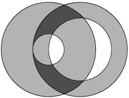

The very first use of ifrit bottles caused mass protests from the world
community. The UNESCO declared that ifrit bombardments were destroying the
historical centers of large cities, which had a tremendous cultural importance.
Pitirim Schwartz corrected the behavior of ifrits so that the centers of the
cities remained untouched. The destruction zone now was a ring instead of a
disk: ifrits destroyed everything that was no closer than r and no farther
than R from the impact point of the bottle.
To estimate the efficiency of carpet ifrit bombardments, Pitirim needs to be
able to calculate the total area of the destruction zone in the case of
dropping two ifrit bottles.

Input
The only input line contains integers d, r1, R1,
r2, and R2, which are the distance between the impact
points of the bottles, the inner and outer radii of destruction of the first bottle,
and the inner and outer radii of destruction of the second bottle, respectively (0 ≤ d ≤ 15000;
1 ≤ ri < Ri ≤ 15000).
Output
Output the total destruction area with an absolute or relative error of at
most 10−6.
Sample
| input | output |
|---|
200 100 300 200 300
| 353992.933435
|
Problem Author: Aleksandr Belits
Problem Source: XII USU Open Personal Contest (March 19, 2011)